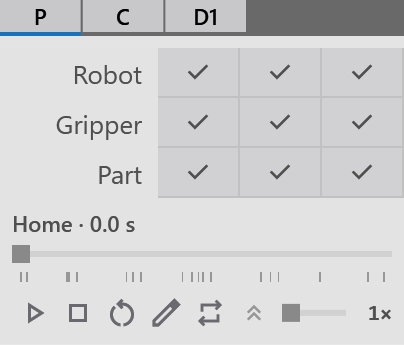
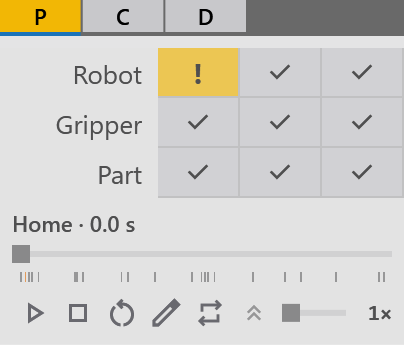

The phase strip
Once a solution exists, the title bar shows the phase strip: one cell per phase of the cycle. It is the quickest way to see whether the cycle is sound.

The cells
Each cell carries the phase’s letter:
| Letter | Phase |
|---|---|
P |
Pickup |
C |
Centering |
L |
Loading onto the machine |
U |
Unloading from the machine |
R |
Regrip at the Overturner |
D |
Deposit |
-
Repeated phases are numbered D1, D2 ….
-
On a deposit with several places the D cell carries the number of the place the part goes to, in a continuous run and in a single cycle.
Each cell’s colour tells you its state:
| Colour | Meaning |
|---|---|
Grey |
Fine |
Yellow |
A warning: a waypoint within 3° of a joint limit or within 5° of the wrist singularity, or a swing passing within 10 mm of an element with the role Other or of the Overturner |
Red, with white letters |
An error: a collision, a pose out of reach, or a joint past its limit |
Blue underline |
The phase the robot is in now |
Hover over a cell for its details, for example C — Centering · 8 steps · 6.2 s. Under Problems: or Warnings: it lists what is wrong.
Click a cell and the robot moves to where that phase handles the part (for example PickContact or DropPartPos). The Waypoints panel opens on that phase: see Waypoints.
The strip is checked again whenever the cycle is planned, and a moment after you edit a waypoint or move or show the obstacle box. The cell of the phase the robot is in also follows the robot’s pose as you jog, play or edit.
|
Note
|
A change of gripper or TCP, or a moved station, is not checked until the cycle is planned again. Click recompute before you trust the colours. |
The tray
Move the mouse over the strip and a tray drops down beneath it:
-
The cycle scrubber:
-
drag it to move through the cycle;
-
the label above it names the waypoint and the time, for example CenDropPos · 10.4 s, and turns red or orange when that waypoint has a problem;
-
the ticks below it mark the waypoints; hover one to see its name.
-
-
The transport buttons Play, Stop, Reset, Edit and Continuous, and the speed: see Simulation.
-
The chevron (Expand matrix / Collapse matrix) opens the matrix. While the matrix is open, the tray stays open.
The tray hides while another program is in front of FRobot.
The matrix
The matrix has a row each for the Robot, the Gripper and the Part, and a column under each phase.
-
A ticked cell: hover it for what happens in that phase, for example Robot · P Pickup — 4 linear (LIN) and 2 joint (PTP) moves · 4.2 s, or closes at PickContact for the gripper. Click it to move the robot there.
-
A cell with "!" has a problem. Click it to read the problems beside it. They close when you click again, click elsewhere, or move the pointer off the cell.

Reading the problems
| Problem text | What it means |
|---|---|
PickRetract → TransitionSafe: collides (gripper↔obstacle box) |
The move between two waypoints hits something; the names after "collides" say what touches what |
… passes gripper within 10 mm of the … (safe distance) |
A warning: a swing comes very close to an element with the role Other or to the Overturner, but does not touch |
X: pose out of reach — the arm stops N mm short of it |
The robot can’t reach waypoint X |
X: out of reach (no joint solution) |
No pose of the arm reaches X |
X: J3 is 2.1° from its limit |
A warning: an axis is close to its limit at X |
X: near the wrist singularity (J4 and J6 axes 3.2° apart) |
A warning: the wrist is nearly straight, where the robot moves badly |
X: the part collides with the Centering where it is released |
The part, once let go, would hit the station |
the folded part stays on the machine bed: add a Deposit station… |
The cell has no Deposit for the bent part |
…turned over in the gripper… add an Overturner… |
The part must be turned over and the cell has no Overturner |
-
Unnamed waypoints: a point of a swing is called swing after X.
-
What touches what: for example robot link U↔Pickup, gripper↔…, carried part↔…, ↔obstacle box or ↔triangle.
How to fix them: see Creating the solution.